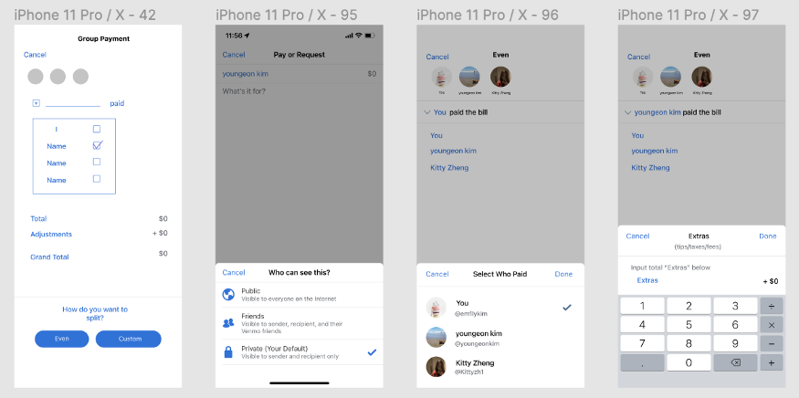

Towards the end of 2021, I went on a road trip with a couple of friends to Chicago. The bill came out quite complicated, accounting for AirBnB stay, restaurants, and other activities. My friend calculated how much each of should pay via Excel and the calculator built into his phone, sent a photo of how the bill was split to us, and then used Venmo at the end to make the money transfer.
I began to wonder if there was a more efficient way to split bills and if other Venmo users ran into this hassle as well.
The Venmo app allows users to request and send money to your friends or businesses, all within a social circle. Unfortunately, while the app's interface is simple and easy to use, splitting bills has been tedious and unintuitive.
People Problem
When I am making group payments in Venmo, I want to split expenses easily so I can pay back everyone accurately. But I can't do that well because:
- It's hard to keep track of who paid for what expense, who owes who and how much
- It's difficult and time-consuming to make group payments
I recruited my two friends, Michael and Tim, to help me brainstorm some potential solutions.
After categorizing and going through viable solutions, I narrowed down to three ideas:
1. Digitalizing and Storing Receipts
This feature would allow users to take photos of the receipts and share them with everyone in the group. This is useful for users if they lose receipts or forget about transactions. It would increase efficiency with sorting orders with multiple people, but utilizing computer vision and camera features would cause some concern about accuracy and how easy it is to implement. After conducting user interviews, people were skeptical of the idea since some receipts are online and also across different platforms.
2. Custom Changes within Group Payment
This feature allows users to make custom deductions or pay for people within a group payment. We felt that Venmo does not easily support paying for other people or making custom deductions based on their relationship with the person. Unfortunately, this may discourage users from utilizing Venmo since privacy is a big concern.
3. Split Calculation
One of the biggest key pain points of users is splitting bills because most choose to split by orders and therefore this feature would cater to the users' needs. Although there is currently a way to link Splitwise to Venmo, we felt that directly having the calculator features on Venmo would be more user-friendly because it reduces the number of clicks to transfer between apps. Including a customizable way to split group payments gives users flexibility to easily calculate who owes who and how much.
Comparing the pros and cons of each idea, I decided to go with the “Split Calculation Feature” because it has the highest feasibility and highest impact.
Understanding How Users Currently Split Bills
There are two main groups of users when it comes to splitting bills:
- Users that use Splitwise to split the bills and then complete the transaction over on Venmo
- Users that punch in the numbers on their calculator and hope that it is accurate
Low-Fidelity Diagram
UI Kit
User Testing
Feature Requirements — Why Include an Even Bill Split Option if Venmo Already has One?
Since my “custom split” feature follows a more complicated flow and the pop-ups are different, it would make more sense to have the “even split” flow parallel to the custom one so that users have familiarity and of how both flows would realistically work in the app.
Selecting Multiple Users
Through user testing, I noticed that users would find it more convenient to use the app if there was a multiple checkbox option to select everyone at once. However, I chose not to design this for two reasons:
- It is most consistent with Venmo's current UI and since the “custom split” would be a significant change to the UX experience, I prioritized consistency so that users would better smoothly adjust to this new feature
- I did not want to replace the iconic “Pay or Request” button on the homepage and first selecting the user allows users to use it normally and Venmo one person.
Visual Design: Name Layout After Creating Group
Option A is in the same layout for the receipt summary screen while Option B is more consistent with Venmo's current UI. After user testing, I found that users would prefer consistency and not having to scroll down the page if there are many users to double check who is included in the group. Therefore, I decided to go with Option B.
How Wording Changes Everything
During user testing, users were confused by what “total” and “grand total” referred to (Option C). I chose Option D because the wording is more clear since subtotal refers to a calculation that is part of a larger total sum while total refers to the final, overall sum. In this case, subtotal is a better fit since “extras” must be added. This is similar to the wording found on a bill at a restaurant, therefore more users would be able to understand Option D better.
One of my key aspects of my feature is to have a way for the user to change who paid to prevent the user who paid the bill to always having to split the bill and Venmo request everyone. My initial design is shown in the first screen, however, through user research and testing, the visual design was not consistent with Venmo's interface, and it took up too much space on the screen. I browsed around the Venmo app to see how pop-ups are shown and an example is shown in the second screen above. For my high-fidelity, I chose to present the information shown in the third and fourth screens above.
A Feedback I Didn't Expect
"I was a bit confused with the “Share With” icon because I thought it was a feature to share it on social media"
Based on this user feedback, I did icon design explorations and came up with the following four icons:
Option E was the one used for user testing and it is similar to social media share icons such as the one used for TikTok. Option F may indicate “distributing money” rather than evenly splitting the cost of an item. Option G represents evenly splitting as well as fits Venmo's simple interface so this option was chosen for high-fidelity prototyping. Option H seemed to be Option G but a complicated version so I did not pursue this design.
Combining It All Together
Selecting Users and Splitting the Bill Evenly and By Custom
Notification Page and Confirming a Venmo Request
Conclusion
Venmo users struggle with the tediousness of splitting group bills. I hope that this feature can lessen the headache of splitting group payments while allowing people to “change people's relationships with money and each other”.